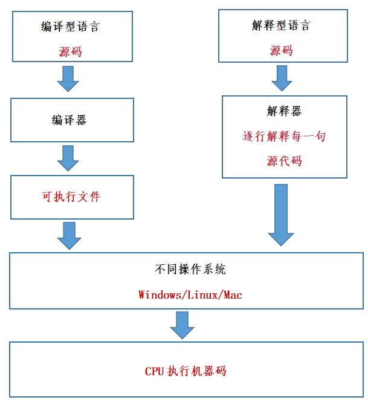

首页 > Python > Python编程基础
编译型语言和解释型语言的区别
通过高级语言编写的源码，我们能够轻松理解，但对于计算机来说，它只认识二进制指令，源码就是天书，根本无法识别。源码要想执行，必须先转换成二进制指令。
简单地理解，编译器和解释器其实就是一个“翻译工具”，对源代码进行“翻译”是一个很复杂的过程，大致包括词法分析、语法分析、语义分析、性能优化、生成可执行文件等五个步骤，期间涉及到复杂的算法和硬件架构，有兴趣的读者请参考《编译原理》一书，这里不再赘述。
编译型语言和解释型语言的执行流程如下所示：
总结：对于编译型语言来说，在执行之前先要经过编译器将源码转换成 CPU 可识别的机器码文件（比如 Windows 下的 .exe 文件）；解释型语言无需预先编译，而是由解释器逐行对源码进行解释，一边解释一边执行。
在运行的时候，我们只需要编译生成的可执行程序，此时就不再需要源代码和编译器，所以编译型语言可以脱离开发环境运行。
编译型语言通常是不能跨平台的，也就是不能在不同的操作系统之间随意切换。
编译型语言不能跨平台表现在两个方面：
比如，你不能将 Windows 下的可执行程序拿到 Linux 下使用，也不能将 Linux 下的可执行程序拿到 macOS 下使用（虽然它们都是类 Unix 系统）。
【实例1】在C语言中，要想让程序暂停，我们可以使用“睡眠”函数。在 Windows 平台下该函数是 Sleep() ，并以毫秒为时间单位，而在 Linux 平台下则是 sleep()， 以秒为单位。可以看出，首先两个函数的首字母大小写不同，再者 Sleep() 的参数是毫秒，而 sleep() 的参数是秒，单位也不一样。
以上两个原因导致具有暂停功能的C语言程序不能跨平台，除非在代码层面对平台的兼容性做出处理，但这非常麻烦。
【实例2】虽然不同平台的C语言都支持 long 类型，但不同平台下 long 类型所占用的字节长度却不相同。例如 Windows 64 位平台下的 long 占用 4 个字节，Linux 64 位平台下的 long 却占用 8 个字节。
如果在 Linux 64 位平台下编写代码时，将 8 字节的值赋值给 long 类型的变量，这是完全没有问题的，但如果是在 Windows 平台下就会导致数值溢出，让程序产生错误的运行结果。
例如，当我们说“下载一个程序（软件）”时，不同类型的语言有不同的含义：
相比于编译型语言，解释型语言几乎都能跨平台，“一次编写，到处运行”是真实存在的，而且比比皆是。那么，为什么解释型语言就能跨平台呢？
其实，这一切都要归功于解释器！
这里所说的跨平台，是指源代码跨平台，而非解释器跨平台。解释器用来将源代码转换成机器码，它本质上就是一个可执行程序，是绝对不能跨平台的。
我们以 Python 为例，Python 官方针对不同平台（比如 Windows、macOS、Linux ）开发了不同的解释器，这些解释器必须要遵守同样的语法，识别同样的函数，完成同样的功能。只有这样，同一份代码才能在不同平台上拥有相同的执行结果。
你看，解释型语言之所以能够跨平台，是因为有了解释器这个中间层。在不同的平台下，解释器会将相同的源代码转换成不同的机器码，解释器帮助我们屏蔽了不同平台之间的差异性。
Python 几乎支持所有常见的平台，比如 Linux、Windows、macOS、Android、FreeBSD、Solaris、PocketPC 等，我们所写的 Python 代码无需修改就能直接在这些平台上正确运行。也就是说，Python 的可移植性是很强的。
所谓二进制指令，也就是由 0 和 1 组成的机器码，能被计算机直接识别并执行。
然而，究竟在什么时候将源代码转换成二进制指令呢？不同的编程语言有不同的规定：- 有的编程语言要求必须提前将所有源代码一次性转换成二进制指令，也就是生成一个可执行程序（比如 Windows 下的 .exe 文件），比如C语言、C++、Golang、汇编语言等，它们都属于编译型语言，使用的转换工具称为编译器。
- 有的编程语言可以一边执行一边转换，需要哪些源代码就转换哪些源代码，不会生成可执行程序，比如 Python、JavaScript、PHP、Shell 等，这类编程语言称为解释型语言，使用的转换工具称为解释器。
简单地理解，编译器和解释器其实就是一个“翻译工具”，对源代码进行“翻译”是一个很复杂的过程，大致包括词法分析、语法分析、语义分析、性能优化、生成可执行文件等五个步骤，期间涉及到复杂的算法和硬件架构，有兴趣的读者请参考《编译原理》一书，这里不再赘述。
编译型语言和解释型语言的执行流程如下所示：

图1：编译型语言和解释型语言的执行流程
图1：编译型语言和解释型语言的执行流程
总结：对于编译型语言来说，在执行之前先要经过编译器将源码转换成 CPU 可识别的机器码文件（比如 Windows 下的 .exe 文件）；解释型语言无需预先编译，而是由解释器逐行对源码进行解释，一边解释一边执行。
除编译型和解释型语言外，还有一种半编译半解释型语言，比如 Java 和 C# 等，这类语言将源代码先转换成一种中间文件（字节码文件），然后再将中间文件拿到虚拟机中执行。
那么，编译型语言和解释型语言各有什么特点呢？它们之间又有什么区别？编译型语言
对于编译型语言，开发完成以后需要将所有的源代码都转换成可执行程序，比如 Windows 下的.exe文件就是一个可执行程序，它里面包含的就是机器码，只要拥有这个可执行程序，就可以随时运行，不需要再重新编译，也就是“一次编译，无限次运行”。在运行的时候，我们只需要编译生成的可执行程序，此时就不再需要源代码和编译器，所以编译型语言可以脱离开发环境运行。
编译型语言通常是不能跨平台的，也就是不能在不同的操作系统之间随意切换。
编译型语言不能跨平台表现在两个方面：
1) 可执行程序不能跨平台
可执行程序不能跨平台很容易理解，因为不同操作系统对可执行文件的内部结构有着截然不同的要求，彼此之间也不能兼容。不能跨平台是天经地义，能跨平台反而才是奇葩。比如，你不能将 Windows 下的可执行程序拿到 Linux 下使用，也不能将 Linux 下的可执行程序拿到 macOS 下使用（虽然它们都是类 Unix 系统）。
注意：相同操作系统的不同版本之间也不一定兼容，比如不能将 x64 程序（Windows 64 位程序）拿到 x86 平台上（Windows 32 位平台）运行。但反之一般可行，因为 64 位 Windows 对 32 位程序做了很好的兼容性处理。
2) 源代码不能跨平台
不同平台支持的函数、类型、变量等都可能不同，基于某个平台编写的源代码一般不能拿到另一个平台直接运行。下面以C语言为例进行说明。【实例1】在C语言中，要想让程序暂停，我们可以使用“睡眠”函数。在 Windows 平台下该函数是 Sleep() ，并以毫秒为时间单位，而在 Linux 平台下则是 sleep()， 以秒为单位。可以看出，首先两个函数的首字母大小写不同，再者 Sleep() 的参数是毫秒，而 sleep() 的参数是秒，单位也不一样。
以上两个原因导致具有暂停功能的C语言程序不能跨平台，除非在代码层面对平台的兼容性做出处理，但这非常麻烦。
【实例2】虽然不同平台的C语言都支持 long 类型，但不同平台下 long 类型所占用的字节长度却不相同。例如 Windows 64 位平台下的 long 占用 4 个字节，Linux 64 位平台下的 long 却占用 8 个字节。
如果在 Linux 64 位平台下编写代码时，将 8 字节的值赋值给 long 类型的变量，这是完全没有问题的，但如果是在 Windows 平台下就会导致数值溢出，让程序产生错误的运行结果。
解释型语言
对于解释型语言，每次执行程序都需要一边转换一边执行，用到哪些源代码就将哪些源代码转换成机器码，用不到的则不进行任何处理。由于每次执行程序都需要重新转换源代码，所以解释型语言的执行效率天生就低于编译型语言，甚至是数量级的差距。因此计算机的一些底层功能，或者关键算法，一般都使用 C/C++ 实现，只有在应用层面（比如网站开发、批处理、小工具等）才会使用解释型语言。
在运行解释型语言的时候，我们始终都需要源代码和解释器，所以说它无法脱离开发环境。例如，当我们说“下载一个程序（软件）”时，不同类型的语言有不同的含义：
- 对于编译型语言，我们下载到的是可执行文件，源代码被作者保留，所以编译型语言的程序一般是闭源的；
- 对于解释型语言，我们下载到的是所有的源代码，因为作者不给源代码就没法运行，所以解释型语言的程序一般是开源的。
相比于编译型语言，解释型语言几乎都能跨平台，“一次编写，到处运行”是真实存在的，而且比比皆是。那么，为什么解释型语言就能跨平台呢？
其实，这一切都要归功于解释器！
这里所说的跨平台，是指源代码跨平台，而非解释器跨平台。解释器用来将源代码转换成机器码，它本质上就是一个可执行程序，是绝对不能跨平台的。
我们以 Python 为例，Python 官方针对不同平台（比如 Windows、macOS、Linux ）开发了不同的解释器，这些解释器必须要遵守同样的语法，识别同样的函数，完成同样的功能。只有这样，同一份代码才能在不同平台上拥有相同的执行结果。
你看，解释型语言之所以能够跨平台，是因为有了解释器这个中间层。在不同的平台下，解释器会将相同的源代码转换成不同的机器码，解释器帮助我们屏蔽了不同平台之间的差异性。
关于Python
Python 属于典型的解释型语言，所以运行 Python 程序需要解释器的支持，只要你在不同的平台安装了不同的解释器，你的代码就可以随时随地运行，不用担心任何兼容性问题，真正实现了“一次编写，到处运行”。Python 几乎支持所有常见的平台，比如 Linux、Windows、macOS、Android、FreeBSD、Solaris、PocketPC 等，我们所写的 Python 代码无需修改就能直接在这些平台上正确运行。也就是说，Python 的可移植性是很强的。
总结
下表对编译型语言和解释型语言的差异进行了总结：| 类型 | 原理 | 优点 | 缺点 |
|---|---|---|---|
| 编译型语言 | 通过专门的编译器，将所有源代码一次性转换成特定平台（Windows、Linux、macOS等）的机器码（以可执行文件的形式存在）。 | 编译一次后，脱离了编译器也能运行，并且运行效率高。 | 可移植性差，不够灵活。 |
| 解释型语言 | 通过专门的解释器，根据需要可以将部分或全部源代码转换成特定平台（Windos、Linux、macOS等）的机器码。 | 跨平台性好，通过不同的解释器，将相同的源代码解释成不同平台下的机器码。 |
一边执行一边转换，效率较低。 |
关注公众号「站长严长生」，在手机上阅读所有教程，随时随地都能学习。内含一款搜索神器，免费下载全网书籍和视频。

微信扫码关注公众号